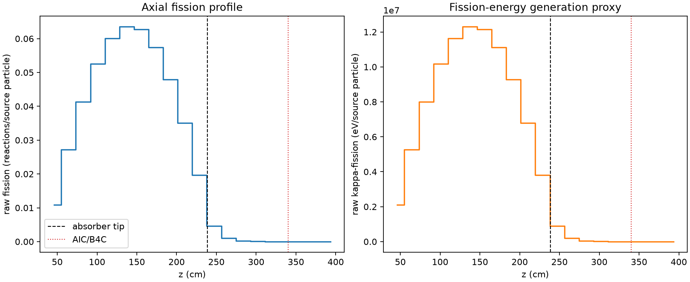
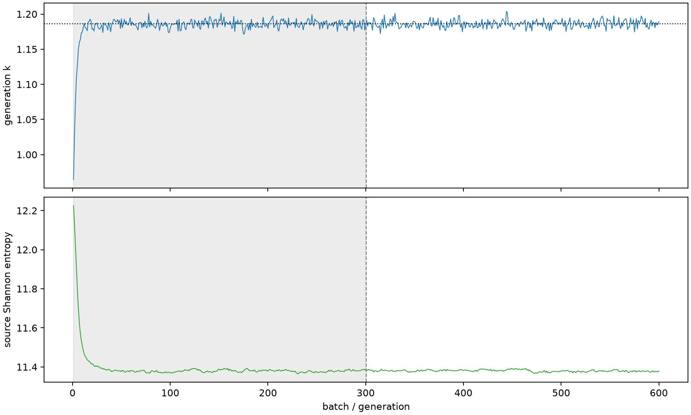

| field | value |
|---|---|
| experiment | V2-STAGE_256_OGRENCI_01-0014 |
| k | 1.1860048757475947 |
| MC standard error | 0.00018656319759118795 |
| seconds | 1027.155987516977 |
| acceptance | not_assessed |
| convergence | review_required |
Completed is output integrity only; physical and statistical review required. Zero tallies do not prove zero production or zero uncertainty.
| diagnostic | value |
|---|---|
| geometric fuel voxels | 5280 |
| zero fission tally voxels | 638 |
| low signal fuel voxels | 1460 |
| low signal fission share | 8.942362199114976e-05 |
| low signal kappa share | 8.945145392420064e-05 |
| important fission share | 0.9500912924274522 |
| previous filter included | 3820 |
| duration estimate s | 1562.5173488400023 |
| actual minus estimate s | -535.3613613230254 |
| fission relative MC error | statistics |
|---|---|
| all_geometric_fuel | {"voxels": 5280, "positive_mean_voxels": 4642, "zero_mean_voxels": 638, "undefined_relative_error_voxels": 638, "median": 0.010162151182960653, "p95": 0.7291290259498341, "maximum": 1.0000000000000002} |
| low_signal | {"voxels": 1460, "positive_mean_voxels": 822, "zero_mean_voxels": 638, "undefined_relative_error_voxels": 638, "median": 0.4972040498585263, "p95": 1.0, "maximum": 1.0000000000000002} |
| important_95pct | {"voxels": 2538, "positive_mean_voxels": 2538, "zero_mean_voxels": 0, "undefined_relative_error_voxels": 0, "median": 0.007133976582624947, "p95": 0.01079938379671705, "maximum": 0.013169917513393354} |
| outside_previous_filter | {"voxels": 1460, "positive_mean_voxels": 822, "zero_mean_voxels": 638, "undefined_relative_error_voxels": 638, "median": 0.4972040498585263, "p95": 1.0, "maximum": 1.0000000000000002} |
| kappa_fission relative MC error | statistics |
|---|---|
| all_geometric_fuel | {"voxels": 5280, "positive_mean_voxels": 4642, "zero_mean_voxels": 638, "undefined_relative_error_voxels": 638, "median": 0.010150967620597225, "p95": 0.7286119133587282, "maximum": 1.0000000000000002} |
| low_signal | {"voxels": 1460, "positive_mean_voxels": 822, "zero_mean_voxels": 638, "undefined_relative_error_voxels": 638, "median": 0.49559418708943415, "p95": 1.0, "maximum": 1.0000000000000002} |
| important_95pct | {"voxels": 2538, "positive_mean_voxels": 2538, "zero_mean_voxels": 0, "undefined_relative_error_voxels": 0, "median": 0.007125882641754197, "p95": 0.010786334210511603, "maximum": 0.013155031629934718} |
| outside_previous_filter | {"voxels": 1460, "positive_mean_voxels": 822, "zero_mean_voxels": 638, "undefined_relative_error_voxels": 638, "median": 0.49559418708943415, "p95": 1.0, "maximum": 1.0000000000000002} |
| axial bin | fission share | kappa-fission share |
|---|---|---|
| 1 | 0.022535951834197033 | 0.022536973707773245 |
| 2 | 0.05622000138553454 | 0.05621969481805494 |
| 3 | 0.08527707134272107 | 0.08527640311922512 |
| 4 | 0.10859201400992427 | 0.10859150200928719 |
| 5 | 0.12409344625379855 | 0.12409278296750442 |
| 6 | 0.1311343614881647 | 0.13113358284343646 |
| 7 | 0.12946287901602269 | 0.12946184846091893 |
| 8 | 0.11862966299552054 | 0.11862905038010173 |
| 9 | 0.0989128646579106 | 0.09891252553787051 |
| 10 | 0.07231356632424134 | 0.07231317564081233 |
| 11 | 0.040723638919864046 | 0.04072378881177832 |
| 12 | 0.009454767088287451 | 0.009457791952980075 |
| 13 | 0.0020347618447635793 | 0.0020356201233455475 |
| 14 | 0.00047441934455240675 | 0.00047462301789798716 |
| 15 | 0.00010818766805833989 | 0.00010821944726547002 |
| 16 | 2.596661208224401e-05 | 2.597584839147871e-05 |
| 17 | 5.9694294056444335e-06 | 5.9713091289043e-06 |
| 18 | 4.665978189299859e-07 | 4.6682095480054525e-07 |
| 19 | 3.18713202734556e-09 | 3.1832726616337253e-09 |
| 20 | 0.0 | 0.0 |
Histories include the inactive-to-active transition at batch 300. kappa-fission approximates fission energy production, not total heat deposition.

